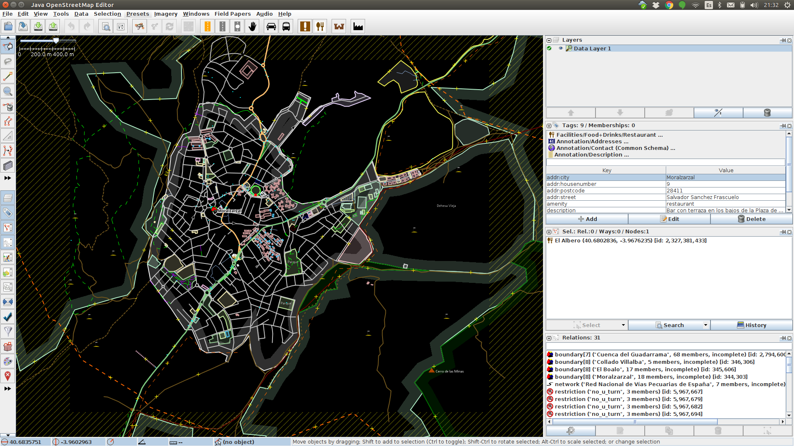
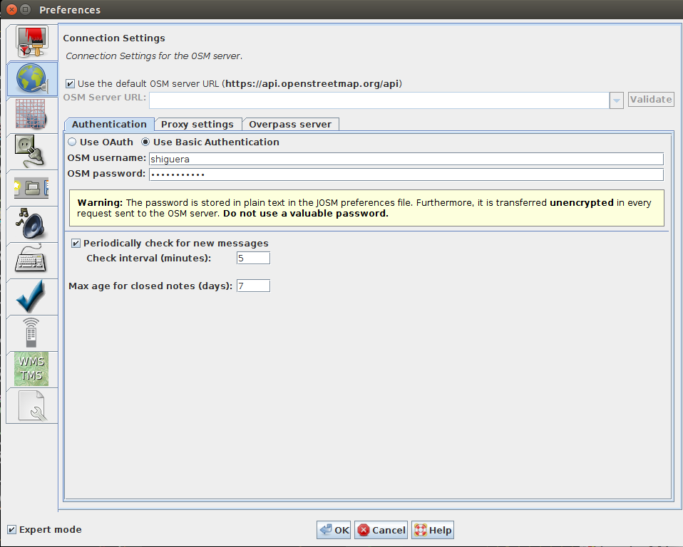
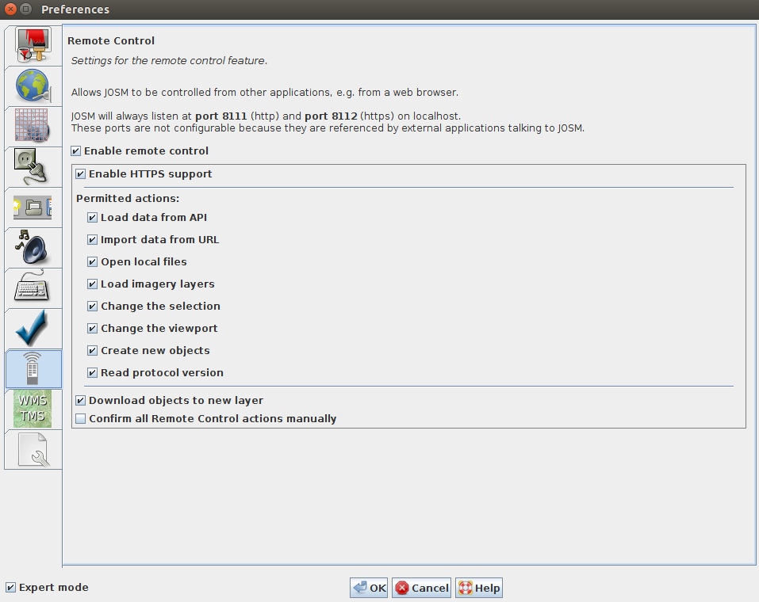

5. JOSM¶
JOSM (Java Openstreetmap Editor) es el editor de referencia actualmente para visualizar, modificar y actualizar los datos de OpenStreetMap. Se trata de un programa de escritorio escrito en Java con el que se puede editar, en formato vectorial, la información de una determinada zona del mapa OSM, tanto las geometrías como las etiquetas. Fue desarrollado por Immanuel Scholz y actualmente está mantenido por Dirk Stöcker.
Existen versiones de JOSM para los diferentes sistemas operativos. Se pueden descargar desde el portal de JOSM:
Para su funcionamiento se requiere tener instalado en su ordenador Java 7.
A pesar de que tiene una curva de aprendizaje relativamente pronunciada, JOSM es muy popular entre los editores experimentados por su estabilidad y por las posibilidades que ofrece gracias en gran parte a sus componente externos, que extiende en gran manera sus capacidades de edición.
Existen otros editores de datos de OpenStreetMap, como iD, Potlatch 2 o Merkaator.
JOSM está traducido al español. Puedes ayudar a la comunidad en esta tarea desde Launchpad.
El interface gráfico presenta a la izquierda una barra de herramientas y el mapa vectorial con la información de la zona descargada; en la parte derecha hay una serie de ventanas con información acerca de las capas descargadas, información temática del elemento seleccionado y otras.
{kind=link}
El programa es muy completo y permite multitud de opciones. Se pueden dibujar nuevos elementos (Nodes, Ways, Relations). Se pueden editar o modificar los existentes. Se pueden descargar zonas desde los servidores de OSM o también abrir ficheros .osm con la información que queremos editar.
La mayoria de las opciones permiten atajos de teclado, algunos de los cuales conviene memorizar para operar con velocidad. Puedes encontrar una buena chuleta con los atajos de teclado en el siguinete enlace:
{kind=link}

5.1. Configuración¶
Tras instalar el programa conviene hacer algunos ajustes en la ventana de configuración. Para acceder a las diferentes opciones de configuración hay que seleccionar la opción del menú Edit->Preferences o bien pulsando la tecla F12.
5.1.1. Usuario y contraseña¶
Si queremos que las modificaciones que hagamos en los datos OSM se actualicen en los servidores de OpenStreetMap, tenemos que decirle al programa nuestro usuario registrado de OSM.
{kind=link}
5.1.2. Edición en remoto¶
Desde la ventana del mapa de OpenStreetMap, cuando elegimos la opción editar, nos da la opción de editar con Id, directamente en la Web, pero también podemos editar desde JOSM. Para ello tenemos que habilitar la opción de control remoto de JOSM. De esta manera, cuando solicitemos editar en el mapa de ÔpenStreetMap, la porción de mapa que estemos viendo en ese momento se descargará en JOSM y podremos editarla desde ahí
{kind=link}
5.1.3. Complementos para JOSM (Plugins)¶
Existen numerosos complementos desarrollados por colaboradores de OSM que agregan nuevas funcionalidades a JOSM. La forma más sencilla de instalar estas extensiones es desde el menú Editar -> Preferencias -> Pestaña Complementos y marcar aquellos componentes que desees agregar a JOSM. Puedes consultar la lista de complementos disponibles desde la propia ventana de configuración de JOSM o también visitando el siguiente enlace:
El siguiente documento aporta algo más de información acerca de la instalación de plugins en OSM:
5.2. Material de aprendizaje¶
La web learnosm.org proporciona diversos manuales de iniciación y para usuarios avanzados que permiten aprender a utilizar el editor JOSM

Herramientas de Edición en JOSM
5.3. Descarga de datos OSM desde JOSM¶
JOSM ofrece varias opciones para descargar datos desde OSM, todas ellas accesibles desde la opción de menu File:
- Desde los servidores de OSM: Opción de menú File -> Download from OSM. Se puede seleccionar una región en el mapa, también se pueden indicar las coordenadas de las esquinas del bounding box que queremos descargar, se puede indicar que se descarguen los datos alrededor de un elemento identificado a través de Nominatim o también seleccionar una serie de tiles por su numeración.
- Mediante una query Overpass API: Opción de menú *File -> Download from Overpass API. Permite descargar los datos correspondientes a un petición en el lenguaje de la Overpass API
- Objeto: Opción de menú File -> Download object. Se puede descargar un objeto concreto indicando el tipo de objeto (Node, Way o Relation) y su identificador ID.
- Notas: Opción de menú File -> Download notes in current view. Permite acceder a las notas que los usuarios de OSM hayan hecho en la parte del mapa que se visuaiza en el editor.
- Parent ways/Relations: Opción de menú File -> Download parent ways/relations. Permite descargar los elementos OSM relativos al que esté seleccionado en el editor.
Además, JOSM permite abrir y editar cualquier fichero en formato OSM proveniente de descargas realizadas por otros procedimientos.
5.4. Exportación de datos desde JOSM¶
Una vez editados los datos con JOSM podemos subirlos a los servidores de OSM, para que queden reflejadas las modificaciones que se hayan hecho, pero también podemos guardarlos en un fichero de disco para su edición posterior o su procesamiento con otros programas.
La opción de menú para guardar la información en disco es File -> Save as. Se puede elegir entre varias opciones para guardar la información:
- GPX
- GeojSON
- Note files (.osn)
- OSM server files: .osm, .osm.bz2, .osm.bz, .osm.gz
- GeojSON proyectado: .proj.geojson